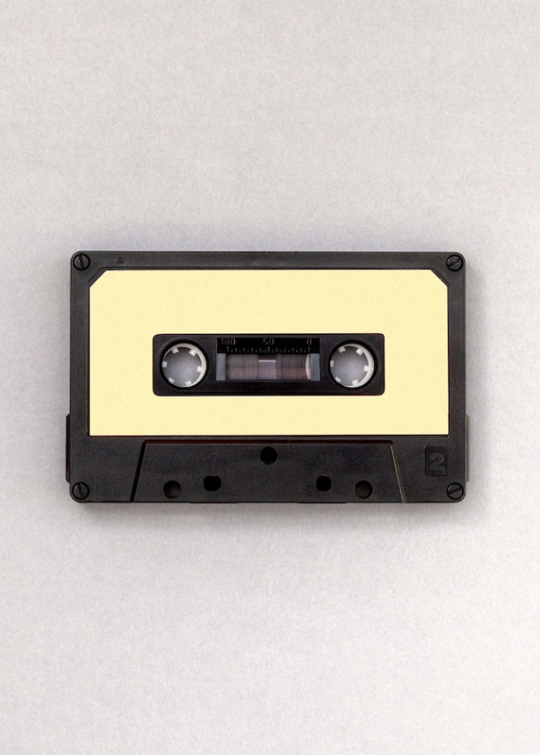

SOBRE NOSOTROS...
Just music es una pagina web destinada para aquellas personas que quieren expandir sus gustos musicales, conociendo los distintos artistas, géneros musicales y asi como también la musica mas escuchada del momento.
